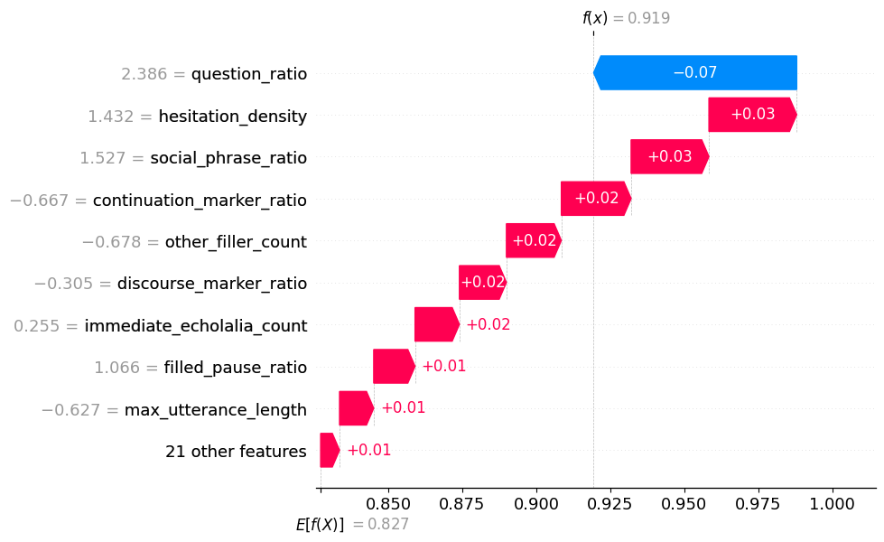

Conversational Feature Guidelines
This table documents all extracted conversational, linguistic, and interactional features used by the ASD detection models, along with their interpretations.
| Feature Name | Description |
|---|---|
| participant_id | Unique identifier assigned to each participant. |
| total_turns | Total number of conversational turns taken by the participant. |
Understanding Model SHAP Explanations
These visualizations explain how conversational behaviors influence ASD or TD predictions.

Waterfall Plot — Why THIS prediction was made
What it answers:
“Which behaviors pushed this prediction toward ASD or TD, and by how much?”
- Each row represents one conversational feature
- Red bars increase likelihood of ASD
- Blue bars decrease likelihood (toward TD)
- Bars accumulate step-by-step to reach the final prediction score
What the numbers mean:
-
Numbers next to feature names (e.g.
−0.56,1.32)
→ The child’s standardized value for that feature compared to the training population -
Numbers inside the bars (e.g.
+0.03,−0.02)
→ How much that feature shifted the model’s decision toward ASD or TD -
Baseline value (E[f(X)])
→ The model’s average prediction before seeing this child’s data -
Final value (f(x))
→ The model’s final confidence score for this child after all features are considered
How to read it clinically:
- Start at the baseline (average child)
- Move feature by feature from top to bottom
- Observe which behaviors push the prediction most strongly
- Small bars indicate minor influence and are usually not clinically dominant
Example interpretation:
Higher continuation markers and discourse markers increased ASD likelihood, while stronger semantic coherence reduced it.
Higher continuation markers and discourse markers increased ASD likelihood, while stronger semantic coherence reduced it.